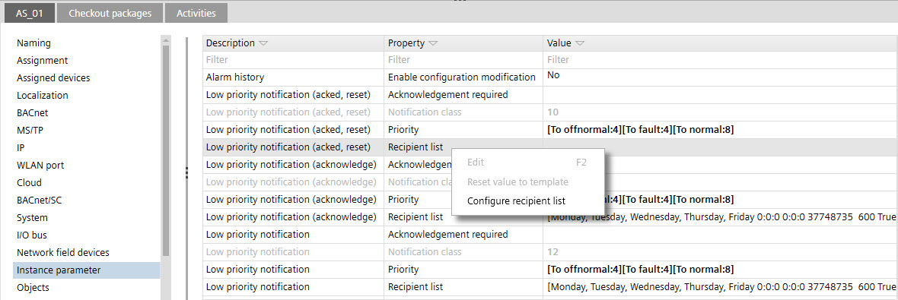
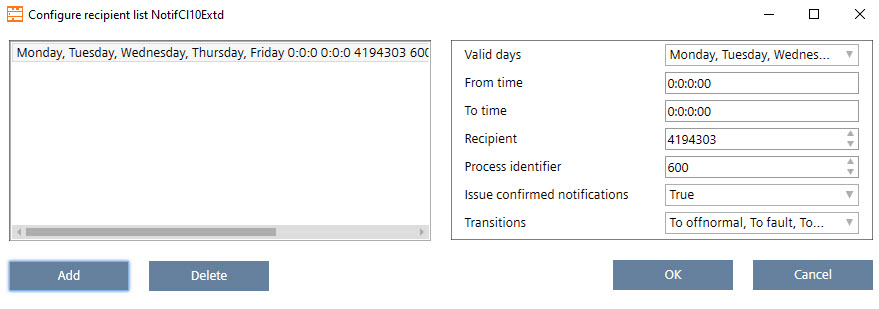
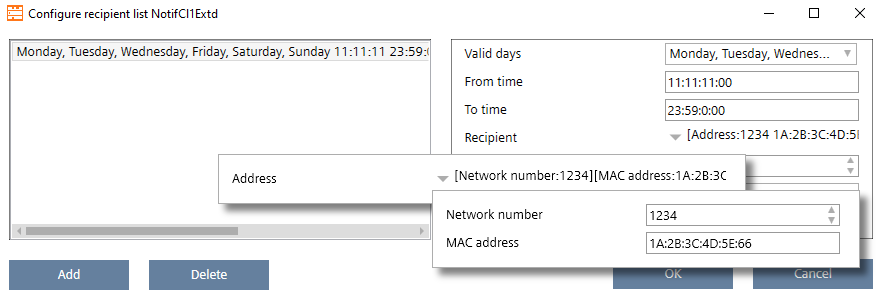

配置收件人列表
 WARNING
WARNING

警报不再转发给收件人
从当前项目导入项目数据后进行的更改可能会导致随后不再在现场转发警报。
- No offline changes should be made in ABT Site after the commissioning.
- If changes are made in ABT Site, the alarm forwarding on site must be checked and verified again.
- Go to Building > Building structure.
- Open the Application & device overview task.
- Select Device types > Controllers > [device].
- In the Details pane of the device, select Instance parameter.
- In the Property column, select the Recipient list cell.
- Right-click and select Configure recipient list.

- The Configure recipient list dialog opens.
- Click Add.
- Configure the recipient list of the selected notification class:
- Valid days
The days of the week on which notifications may be sent to this destination during the value of From time and To time. - From time
The time during which the destination is used. To specify all times, use 00:00:00 for From time (start time ) and 23:59:59 for To time (stop time) - To time
- Recipient
The destination devices to receive event notification messages defined:
- as ID
or
- with network number and MAC address. - Process identifier
The process ID within the recipient device that receives the event notification messages. - Issue confirmed notifications
Indicates whether to send confirmed or unconfirmed event notifications. - Transitions
Indicate the types of transitions (To Offnormal, To Fault, or To Normal) sent to the destination.
Example with device ID:
Example with network number and MAC address:
- Click OK.
- Repeat the steps for each Recipient list entry.